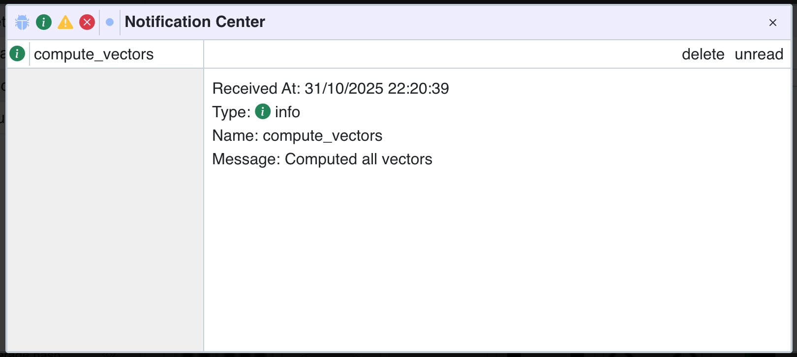

Create plugins
Overview
Panoptic implements a plugin system that lets you customize how you work with your image data. The interface can adapt to various action results, making it a convenient tool for data visualization and manipulation.
How It Works
Plugins extend Panoptic by hooking into multiple points:
- UI Actions – Register custom actions that appear in the interface and operate on selected images
- System Events – Respond to events such as image imports or folder deletions to automate data updates
- Data Layer – Define custom properties, store vectors, and manage data structures within the project database
Panoptic’s own machine learning features—CLIP vectors, FAISS clustering, similarity search, and duplicate detection—are implemented inside the PanopticML plugin:
https://github.com/CERES-Sorbonne/PanopticML
It serves as a good example for understanding how to develop your own plugin.
Plugin Loading and Lifecycle
Plugins are loaded at the project level, meaning each Panoptic project can have its own set of active plugins with project-specific configurations. When a project opens, its plugins are initialized and remain active throughout the project's lifetime.
A plugin is identified by a unique name.
Core Components
PluginProjectInterface: The main interface that plugins use to interact with the Panoptic project. It provides access to:
- Database operations (instances, properties, tags, vectors
- Task management for long-running operations
- Event system for reacting to project changes
- UI update triggers
APlugin: The base class that all plugins must inherit from. It handles:
- Action registration for UI integration
- Event subscription management
- Access to plugin-specific resources
Plugin Resources
Each plugin has access to:
- Data folder: A dedicated directory for storing plugin-specific data, models, caches, or any persistent files the plugin needs
- Project interface: Full access to project data and operations through the
PluginProjectInterface - Base path: The project’s root directory for accessing project files
Plugin Setup
Before a plugin can interact with a Panoptic project, it must be properly initialized and registered.
This section explains how to define the plugin class, configure its parameters, and register actions or events so that it integrates seamlessly into the Panoptic environment.
Base Class
Every plugin inherits from APlugin and is instantiated with three parameters:
class MyPlugin(APlugin):
def __init__(self, project: Project, plugin_path: str, name: str):
super().__init__(name=name, project=project, plugin_path=plugin_path)
# Initialize your plugin here
project: The loaded Panoptic projectplugin_path: The filesystem path where your plugin is locatedname: Your plugin’s unique identifier
To avoid blocking the application thread, you can execute heavy workloads by overriding the asynchronous function _start().
_start() is called automatically when the plugin is loaded.
async def _start(self):
# Load models, create initial properties, etc.
Available Attributes
| Attribute | Type | Description |
|---|---|---|
name |
str |
The plugin’s identifier, provided by the user when registering it into Panoptic. |
params |
Any |
Customizable params object that provides persistent storage for plugin settings. These can be updated from the UI. |
path |
str |
Filesystem path to the plugin directory. |
data_path |
Path |
Path to the plugin’s personal data folder. The folder is automatically deleted when removing the plugin. |
project |
PluginProjectInterface |
Main interface for interacting with the current project. Provides access to project methods and database operations. |
_project |
Project |
Warning: The real project object given at initialization. Use only if necessary. UI updates are not guaranteed for direct modifications. |
registered_functions |
List[FunctionDescription] |
List of actions currently registered by this plugin. |
vector_types |
list[VectorType] |
Vector types registered by your plugin, automatically updated when modified. |
base_key |
str |
Unique database key used to store plugin parameters (<plugin_name>.base). |
Available Methods
| Method | Type | Description |
|---|---|---|
def add_action(self, function, description) |
Method | Register a custom action manually by providing a FunctionDescription. |
def add_action_easy(self, function, hooks: list[str] = None) |
Method | Quickly register an async function as an action. You can specify where the action appears in the UI by setting the hooks. Possible values: 'vector_type', 'vector', 'similar', 'group', 'execute' |
Plugin Parameters
Plugin parameters let users configure a plugin’s behavior without modifying its code.
Define your plugin’s parameters by creating a Pydantic BaseModel. These parameters can be adjusted through the UI and are automatically persisted in the database.
from pydantic import BaseModel
class MyPluginParams(BaseModel):
# Boolean flags
auto_process_imports: bool = True
# Numeric settings
batch_size: int = 32
confidence_threshold: float = 0.75
# String options
output_format: str = "json"
For each type, the UI shows an adapted input field:
int: Number inputfloat: Number input with decimalstr: Text inputbool: Checkbox inputPropertyId: Property selectionEnum: Selection fieldVectorType: Any registered vector selectionOwnVectorType: Own registered vector selection
Initialize parameters in your plugin’s __init__:
class MyPlugin(APlugin):
def __init__(
self,
project: PluginProjectInterface,
plugin_path: str,
name: str
):
super().__init__(name=name, project=project, plugin_path=plugin_path)
# Initialize with defaults
self.params = MyPluginParams()
Creating Functions
Plugin functions are async methods that perform operations on project data. They receive an ActionContext and can also declare additional inputs:
async def my_function(self, context: ActionContext, param1: str):
# Get instances selected by user
instances = await self.project.get_instances(context.instance_ids)
# Process data
results = process_data(instances, param1)
# Return results
return ActionResult(
groups=[results],
notifs=[Notif(NotifType.INFO, "Success", "Processing complete")]
)
ActionContext is defined as follows:
@dataclass
class ActionContext:
instance_ids: List[int] | None = None
instance_ids to know on which instances to apply the action.
Additional parameters can be defined as long as they are one of the supported types:
int, float, str, bool, PropertyId, Enum, VectorType, OwnVectorType
A valid plugin function must return an ActionResult:
@dataclass
class ActionResult:
groups: list[Group] = None
notifs: list[Notif] = None
value: Any = None
groups: Groups of images to be shown in the UInotifs: Notifications (INFO,ERROR,WARNING)value: Placeholder for single-value results
ActionResult
The ActionResultobject serves a unified return type for plugin actions.
@dataclass
class ActionResult:
groups: list[Group] = None
notifs: list[Notif] = None
value: Any = None
Groups
When called from the instance views the actions group, similarand execute can show instance groups to the user by filling the groupsfield.
A Groupis defined as follows:
@dataclass
class Group:
ids: list[int] = None
sha1s: list[str] = None
# scores of the ids or sha1's
scores: ScoreList = None
# score of the group
score: Score = None
name: str = None
```
you can populate the group with `instances`or `images`by fillings the `ids (instances)`or `sha1s (images)`fields. Populating both fields should not be done and will give unexpected results in the UI.
Groups and instances/images can have a score.
```python
@dataclass
class Score:
value: float
min: float
max: float
description: str = ''
max_is_best: bool = True
setting the min/max fields allows the UI to show adapted filtering options. the max_is_bestfield is used to inverse the sorting direction. The descriptionfield gives information to the user about the interpretation of this score.
To score the instances/images fill the scoresfield with a ScoreList:
@dataclass
class ScoreList:
values: list[float]
min: float
max: float
description: str = ''
max_is_best: bool = True
idsor sha1s.
You can also give a custom name to your group to be displayed with name.
If no name is set a default name will be given.
Notifications
An action can return notifications for the user.
class Notif:
type: NotifType
name: str = None
message: str = None
data: Any = None
functions: list[NotifFunction] = None
class NotifType(Enum):
DEBUG = "debug"
INFO = "info"
WARNING = "warning"
ERROR = "error"
class NotifFunction:
function: str
context: ActionContext
message: str
type: type of notification for filteringname: notification name to be displayedmessage: notification messagedata: Any data displayed as JSON in the UIfunctions: Actions suggestion to be displayed in the UI.
The NotifFunction.functionfield expects the function string id. You can get it by saving the function description when registering actions as shown in the next section.
description = self.add_action_easy(self.my_func, hooks)
description.id # contains the function string id
Registering Actions
Function can be registered in the plugin constructor __init__(). Two functions are available to do so:
def add_action_easy(
self,
function: AsyncCallable,
hooks: list[str] = None
) -> FunctionDescription
def add_action(
self,
function: AsyncCallable,
description: FunctionDescription
) -> FunctionDescription
add_action_easy()automatically parses the given function signature and inline documentation to generate a FunctionDescription. The hooksarray defines where in the UI the function should be made available.
Current hooks are:
- 'vector_type': Vector type creation actions
- 'vector': Vector computation actions
- 'similar': Similarity search actions
- 'group': Clustering and grouping actions
- 'execute': General execution actions
The FunctionDescriptiongives the UI all needed information to make an UI element adapted to the functions inputs. Parameter have customizable label, descriptions, input fields.
For more control over the UI you can populate the FunctionDescriptionobject yourself and register the function with add_action().
System Events
Plugins can also listen to events to react accordingly:
def on_instance_import(self,
callback: Callable[[Instance],
Awaitable[None]]
)
def on_folder_delete(
self,
callback: Callable[[DeleteFolderConfirm],
Awaitable[None]]
)
For example, the PanopticML plugin uses the instance import event to automatically calculate image vectors and the folder delete event to update its FAISS vector indexes.
Data
Plugins often need to read and write project data.
This section details how to access instances, tags, and vectors from the database, and how to safely commit changes while keeping the UI synchronized with the project state.
Reading
The plugin interface provides methods to query various types of data from the project database.
The first step is usually to retrieve more information about the instances from the ActionContext:
# Get instances by IDs
instances = await self.project.get_instances(ids=[1, 2, 3])
# Get instances by SHA1 hashes
instances = await self.project.get_instances(sha1s=["abc123...", "def456..."]) # Get all instances (no filters)
instances = await self.project.get_instances()
For every data type in Panoptic, the interface gives access to corresponding database queries:
# Folders
get_folders() -> list[Folder]
# Properties
get_properties(ids: list[int] = None, computed: bool = False) -> list[Property]
# Tags
get_tags(ids: list[int] = None, property_ids: list[int] = None) -> list[Tag]
# Instance property values
get_instance_property_values(
property_ids: list[int] = None,
instance_ids: list[int] = None
) -> list[PropertyValue]
# Image property values
get_image_property_values(
property_ids: list[int] = None,
sha1s: list[str] = None
) -> list[PropertyValue]
# Vectors
get_vectors(type_id: int, sha1s: list[str] = None) -> list[Vector]
vector_exist(type_id: int, sha1: str) -> bool
# Vector types
get_vector_types(source: str = None) -> list[VectorType]
Multiple filtering options are treated as OR conditions.
Writing
Writing to the project database is mostly done with the commit system.
The following types support undo/redo functionality and automatic UI synchronization when using commits:
folders, instances, properties, property_groups, tags, instance_values, and image_values.
A commit object contains one batch of updates:
class DbCommit:
empty_instances: list[int]
empty_property_groups: list[int]
empty_properties: list[int]
empty_tags: list[int]
empty_instance_values: list[InstancePropertyKey]
empty_image_values: list[ImagePropertyKey]
folders: list[Folder]
instances: list[Instance]
property_groups: list[PropertyGroup]
properties: list[Property]
tags: list[Tag]
instance_values: list[InstanceProperty]
image_values: list[ImageProperty]
timestamp: datetime
To delete objects, mark them in the corresponding empty_ lists.
Some objects have a unique ID of type int. When creating new objects, you should set a negative Id. Helper functions are provided to ensure correct Id attribution:
def create_instance(
self,
folder_id: int,
name: str,
extension: str,
sha1: str,
url: str,
width: int,
height: int,
ahash: str
) -> Instance
def create_property(
self,
name: str,
type_: PropertyType,
mode: PropertyMode
) -> Property
def create_property_group(
self,
name: str
) -> PropertyGroup
def create_tag(
self,
property_id: int,
value: str,
parent_ids: list[int] = None,
color=-1
) -> Tag
def create_vector_type(
self,
params: dict
) -> VectorType
Negative IDs are valid inside a commit and can be referenced by other new objects.
For example, an InstanceValue can reference both a new instance and a new property with negative IDs.
When writing to the database, Panoptic automatically determines the correct insertion order and updates the IDs once the objects are stored.
Execute a commit using one of the following methods:
async def apply_commit(self, commit: DbCommit)
async def do(self, commit: DbCommit)
The do() function computes the opposite commit before calling apply_commit(), allowing the operation to be reversed later with undo().
Two object types are not written through commits: vector_type and vector.
Use the corresponding methods instead:
async def add_vector_type(self, vec: VectorType) -> VectorType
async def add_vector(self, vector: Vector) -> Vector
Heavy Computation & Concurrency
The Panoptic backend runs in an asynchronous event loop. To avoid blocking the main thread, heavy workloads should be executed in a ThreadPoolExecutor.
There are two main ways to do this in Panoptic.
Async Helper
The easiest way to delegate a blocking function to the executor is with the helper:
res = await self.project.run_async(function, *args)
Use this helper for simple background tasks that don’t need to be tracked or visualized in the UI.
It’s ideal for lightweight operations where you just need to offload a blocking function to a background thread and asynchronously wait for the result.
Examples include:
- Running small data transformations
- Performing lightweight file I/O operations
- Calling a blocking library function once
The Task Queue
The TaskQueue is designed to manage and track background tasks.
Each task can include a sequence of asynchronous or synchronous functions treated as a single work unit.
Its main advantage is providing visual feedback in the UI through a progress bar.
Additionally, it supports executing specific functions once a set of tasks has completed.
Creating a Task
Inherit from the Task base class and implement the run() method:
from panoptic.core.task.task import Task
class MyProcessingTask(Task):
def __init__(self, plugin, instance, config):
super().__init__(priority=False) # Set priority=True for urgent tasks
self.plugin = plugin
self.instance = instance
self.config = config
# Customize task identification
self.name = 'Process Image' # Shown in UI
self.key = f'task_1' # Unique identifier
async def run(self):
"""Main task execution - this runs in the background"""
# Use _async() for CPU-intensive operations
result = await self.run_async(
self._heavy_computation,
self.instance.url,
self.config
)
# Store results (database operations are already async)
await self.plugin.project.add_vector(result)
return result
async def run_if_last(self):
"""Called once when all tasks with this key are complete"""
# Rebuild indexes, update UI, or perform cleanup
await self.plugin.rebuild_index()
@staticmethod
def _heavy_computation(image_path, config):
"""CPU-intensive work runs in executor thread"""
# Load and process image
image = Image.open(image_path)
# Perform heavy computation
vectors = extract_vectors(image, config)
return vectors
The self.key field serves two purposes:
- Executes the
run_if_last()function on the last task with the same key - Groups related tasks together in the UI
Adding Tasks to the Queue
Add tasks from your plugin using the project interface:
def add_task(self, task: Task):
The TaskBar should now be visible in the UI.
Step by Step example
This guide will show you how to create a new plugin step by step. Our goal is to add some custom functions to Panoptic:
- compute_vectors(): a function that computes image vectors
- compute_clusters() a function that computes clusters for a list of instances
To keep it very simple we will implement one function that computes the vectors of an instance selection with the executehook. And a clustering function with the grouphook. We will have only one default vector type.
Folder
A plugin is contained in a folder that we will call my_plugin
inside this folder we create three files: __init__.py, my_plugin.py and requirements.txt
my_plugin
| __init__.py
| my_plugin.py
| requirements.txt
__init__.pyis the entry point for the plugin loader.requirements.txtcontains the pip module requirements for the plugin. In our case it will be empty.my_plugin.pycontains the plugin code
Plugin Initialization
# my_plugin.py
from panoptic.core.plugin.plugin import APlugin
from panoptic.core.project.project import Project
from panoptic.models import ActionContext
from panoptic.models.results import ActionResult
class MyPlugin(APlugin):
def __init__(self, project: Project, plugin_path: str, name: str):
"""
The initialization method for a Panoptic Plugin.
Is called by Panoptic at Project launch.
:param project: The Project instance
:param plugin_path: The path to the plugin module
:param name: The identifier of the plugin as a unique name
"""
# dont forget to call parent constructor
super().__init__(name=name, project=project, plugin_path=plugin_path)
self.add_action_easy(self.compute_vectors, ['vector'])
self.add_action_easy(self.compute_clusters, ['group'])
async def compute_vectors(self, ctx: ActionContext):
res = ActionResult()
# some code ...
return res
async def compute_clusters(self, ctx: ActionContext, nb_clusters: int):
res = ActionResult()
# some code ...
return res
This code snippet defines our plugin class. It is important to call the parent constructor in our own __init__(..) function to properly initialize the plugin.
We can then register our function and select our action hooks. The compute_vectors()function is registered as an vectoraction and the compute_clusters() function as an groupaction.
The function body is empty for now but to ensure that UI is happy we already return an ActionResult.
# __init__.py
from my_plugin import MyPlugin
plugin_class = MyPlugin
Finally we declare the plugin_classin the __init__.pyfile.
You can now start Panoptic and add your plugin. You should see your clustering function on the group ActionButton.

As you can see our vector compute function is not visible in the UI. This is because we didn't register any vector_typefor our plugin. Vector types serve as identifier for vectors.

Creating Vectors
To store vectors in the database we need to register a vector_type for them. For this example we will only one type for our dummy vectors.
async def _start(self):
if len(self.vector_types) == 0:
vec_type = self.project.create_vector_type({"model": "fake_vector"})
await self.project.add_vector_type(vec_type)
print('created ', vec_type)
We implement the _start() function, which is automatically called when the plugin is loaded.
The variable self.vector_types is automatically updated with vector types created by this plugin. If the list is empty we want to create one.
Like other objects, vector types have a unique integer ID managed by the database. You can create a new vector type using the utility function:
self.project.create_vector_type(params: dict)
await self.project.add_vector_type(vec_type)
self.vec_typenow contains our new vector type, and it is visible in the UI.
 And our compute vector function is now callable by clicking on the
And our compute vector function is now callable by clicking on the computebutton in the vector row.
We want to place the images in a 1-dimensional vector space where the value represents the main hue (0-255) of the image. Our computation function looks like this:
@staticmethod
def compute_hue_vector(path: str):
img = Image.open(path)
img = img.convert('RGB')
img_hsv = img.convert('HSV')
# Get HSV data as numpy array
hsv_array = np.array(img_hsv)
# Extract hue channel (first channel in HSV)
hue_channel = hsv_array[:, :, 0]
# Flatten and calculate histogram
hue_flat = hue_channel.flatten()
# Get most common hue value
counts = np.bincount(hue_flat)
dominant_hue = np.argmax(counts)
# 1-dimensional vector. Convert to float32 to match database type
return np.array(int(dominant_hue), dtype='float32')
and our updated compute_vectors() function
async def compute_vectors(self, ctx: ActionContext):
# get instances from database
instances = await self.project.get_instances(ids=ctx.instance_ids)
# keep only on instance per sha1
unique = list({i.sha1: i for i in instances}.values())
# get our vector type id
type_id = self.vector_types[0].id
for instance in unique:
# compute the hue vector in the executor to avoid blocking
# the main thread
hue_vector = await self.project.run_async(
self.compute_hue_vector, instance.url
)
# create the vector object to be written in the database
vector = Vector(type_id=type_id, sha1=instance.sha1, data=hue_vector)
# write to database
await self.project.add_vector(vector)
# send success notification
notif = Notif(
type=NotifType.INFO,
name='compute_vectors',
message='Computed all vectors'
)
# always return an ActionResult
return ActionResult(notifs=[notif])
It is important to wrap computationally intensive functions with the run_async function.
Even better, you can use the Task and TaskQueue interfaces to execute computations in the background.
You can refer to the official PanopticML plugin for an example that uses a Task object.
At the end, we return a notification to indicate that the computation completed successfully.
This notification will appear in the UI once the action has finished.
 If your function crashes without proper error handling, Panoptic will automatically generate an error notification that includes the traceback.

Clustering
Now that we have vectors we can start clustering. For our example we will sort the images by hue value and then create a chosen number of equally sized groups.
The computation looks like this:
@staticmethod
def group_instances_by_hue(
instances: list[Instance],
sha1_to_hue: dict[str, int],
num_groups: int
):
"""
Sort instances by hue and group them.
"""
# Use np for simplicity
id_array = np.array([i.id for i in instances])
hue_array = np.array([sha1_to_hue[i.sha1] for i in instances])
# Sort by hue
sorted_indices = np.argsort(hue_array)
sorted_ids = id_array[sorted_indices]
sorted_hue = hue_array[sorted_indices]
# Split into equal-sized groups
id_groups = np.array_split(sorted_ids, num_groups)
hue_groups = np.array_split(sorted_hue, num_groups)
return id_groups, hue_groups
We have to integrate this result into the ActionResultapi.
async def compute_clusters(self, ctx: ActionContext, nb_clusters: int):
# get instances from the database
instances = await self.project.get_instances(ids=ctx.instance_ids)
# get our own vectors from the database
vectors = await self.project.get_vectors(self.vector_types[0].id)
# map sha1 to Hue with the vector data
sha1_to_hue = {v.sha1: v.data.tolist()[0] for v in vectors}
# compute vectors with the data
id_groups, hue_groups = self.group_instances_by_hue(
instances, sha1_to_hue, nb_clusters
)
# iterate over result and fill the Group objects
groups = []
for id_group, hue_group in zip(id_groups, hue_groups):
# get min and max hue of each group
min_hue = hue_group.min()
max_hue = hue_group.max()
# create Group of instance ids
group = Group(
# extract the instance ids from the np.array
ids=id_group.tolist(),
# choose a name for the group
name=f"Hue group: {min_hue}-{max_hue}"
)
groups.append(group)
# return the clusters
return ActionResult(groups=groups)
The implementation of the compute_vectorsis easy to follow. First we retrieve all needed data to compute our clustering and then we use the ActionResultto return the groups to the UI.

Call the function from the Cluster ActionButtonand the result should be visible in the UI. Be sure to have executed the compute vector action before.
Hopefully this guide was able to make the logic behind the plugin system more understandable. The official PanopticML plugin is the best resource to have more complex examples of plugin usage.